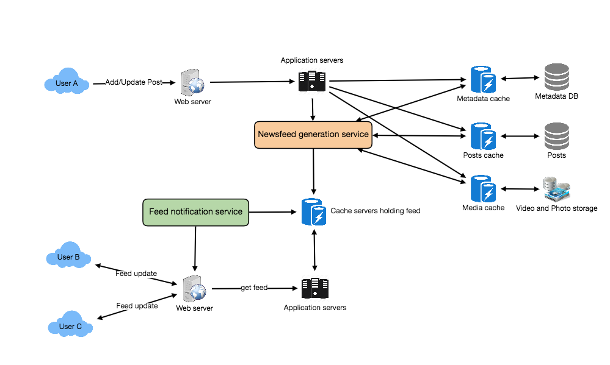

The generalized feed problem behind Twitter and Instagram — but with a twist they don't have: the feed is ranked, not just chronological. So on top of the fan-out problem you must score and order what each user sees. Two hard parts: generating the candidate set (fan-out) and ranking it.
The crux Pre-compute each user's candidate posts (hybrid fan-out), then rank them — the ranking is the part Twitter/Instagram's chronological feeds skip. Fan-out builds the candidate set; a ranking layer scores it. Both must serve a read-dominated workload.
1. Requirements
Functional: a home feed of posts from friends/pages/groups you follow, ranked by relevance (not just time); like/comment/share; mixed media. Non-functional: low feed-load latency, highly available, eventual consistency OK, read-dominated. Extended: ads injection, real-time updates, "why am I seeing this."
2. Capacity estimate
- Read-dominated like every feed: each post is read far more than written; the read path is the scale challenge.
- Ranking adds compute per read: unlike a chronological feed, each feed load must score candidate posts — so the ranking layer's cost is a new dimension Twitter's timeline doesn't have.
- Fan-out volume: a post from a high-degree page/user must reach many feeds — the celebrity problem again.
3. System API
getFeed(api_key, user_id, count, cursor) → ranked [posts]
publishPost(api_key, author_id, content) → post_id // triggers fan-out
4. High-level architecture
- Fan-out service — on publish, push the post into followers' feed stores (hybrid: pull for high-degree authors).
- Feed store — per-user candidate posts (cached).
- Ranking service — scores candidates per feed load (recency, affinity, engagement, ML model).
- Read path — CDN/cache for media + the cached, ranked feed; the database serves only the cold tail.
The shape in one sentenceFan-out builds each user's candidate set cheaply; a ranking layer orders it on read; caching shields the database — it's Twitter's feed plus a scoring stage.
5. Data model
| Entity | Holds |
|---|
| Post | post_id (time-encoded), author, content, media, engagement counters |
| Edge (follow/friend) | who sees whom — drives fan-out |
| Feed (candidate set) | user_id → candidate post_ids (cached) |
| Signals | affinity, engagement, recency — ranking features |
Three scenarios — the hard parts, as questions
Scenario 1 — a page with 50M followers posts
You pre-compute feeds by pushing posts to followers. A page with 50 million followers posts. How many feed writes is that — and what's the fix you've now seen in Twitter and Instagram?
Scenario 2 — the feed isn't chronological
Unlike Twitter's timeline, Facebook ranks the feed — a post from yesterday with lots of engagement may outrank a boring one from a minute ago. You have 500 candidate posts and must show the best 20. When and where does that scoring happen so the feed still loads fast?
Scenario 3 — everyone scrolls at once
Peak hours: hundreds of millions of feed loads, each pulling and ranking candidates. What keeps the database and ranking layer from collapsing?
Scenario 1 is fan-out (shared with Twitter). Scenario 2 is ranking (the new part). Scenario 3 is serving reads.
6. The hard sub-problems
Sub-problem 1 — Generating the candidate set (fan-out)
Same trade-off as every feed: pull (cheap write, expensive read) vs push (expensive write, cheap read). Because reads dominate, push is the default — build each user's candidate set when authors post.
The failure that happens when you get this wrong — the celebrity fan-out
This is
Scenario 1, and it's the
same problem solved in
Twitter and
Instagram: pushing a high-degree author's post to tens of millions of feeds is ruinous write amplification. The fix is the same
hybrid: push for normal authors,
pull high-degree authors' posts at read time and merge. (See Twitter's treatment for the full mechanism — Facebook's feed inherits it and layers ranking on top.)
Sub-problem 2 — Ranking the feed
This is what distinguishes a newsfeed from a chronological timeline. The candidate set must be scored and ordered — by recency, your affinity with the author, predicted engagement, content type, and increasingly an ML model — then the top-N shown.
The failure that happens when you get this wrong — the rank-everything cost
This is Scenario 2. Fully scoring hundreds of candidates with a heavy ML model on every feed load, synchronously, blows the latency budget at hundreds of millions of loads. The standard fix is a funnel: (1) candidate generation (fan-out) yields a few hundred posts; (2) a cheap first-pass filter trims them; (3) an expensive ranking model scores only the survivors; (4) cache the ranked result briefly so a re-load or scroll doesn't re-rank from scratch. You spend the heavy compute on a small, pre-filtered set — the same "limit early, do expensive work on few items" pattern as search's top-k. Ranking can also be partly pre-computed and refreshed, not done cold on every request.
Sub-problem 3 — Serving the read-dominated path
Hundreds of millions of feed loads at peak must not hit the database directly. Cache the candidate set and the ranked result; serve media from the CDN; only misses reach the store.
The failure that happens when you get this wrong — read-load collapse
This is
Scenario 3, the same read-shielding problem as
Instagram: without layered caching, the peak-hour read spike saturates the database and ranking tier. Cache aggressively (candidate sets, ranked feeds with short TTL, media on CDN), and protect against the
cold-cache stampede. The ranking layer scales horizontally and is fed pre-computed signals so each request does bounded work.
The design at a glance
| Piece | Choice | Why |
|---|
| Candidate generation | Hybrid fan-out (push normal, pull high-degree) | Reads dominate; push ruinous for celebrities |
| Ranking | Funnel: generate → filter → model-score top set → cache | Heavy scoring only on a small pre-filtered set |
| Read path | Cache candidate + ranked feed; CDN media | Survive peak read load |
| IDs | Time-encoded post IDs | Recency signal + cheap merge |
Self-check — can you reconstruct the design?
- Scenario 1 (fan-out): Why is this the same celebrity problem as Twitter, and what's the hybrid fix?
- Scenario 2 (ranking): What does a chronological feed skip that a newsfeed must do, and how does the ranking funnel keep it fast?
- Scenario 3 (reads): What layers shield the database and ranking tier at peak?
- Why rank a pre-filtered candidate set rather than everything a user could possibly see?
The shape to remember: it's a feed (hybrid fan-out) plus a ranking funnel — candidate generation builds the set, ranking orders it, caching serves it.
Related: Twitter & Instagram (fan-out), Recommendation & ML (ranking), Caching, CDN.
Cloud services — what you'd build it on
| Piece | AWS | GCP | Azure |
|---|
| Feed cache | ElastiCache | Memorystore | Cache for Redis |
| Ranking (ML serving) | SageMaker | Vertex AI | Azure ML |
| Fan-out queue + store | Kinesis + DynamoDB | Pub/Sub + Bigtable | Event Hubs + Cosmos DB |
A vocabulary aid; product names change — verify before relying on it.
Famous implementations
Facebook ranking (EdgeRank → ML)
- What it is. Facebook's feed ranking evolved from the simple EdgeRank (affinity × weight × time-decay) to large ML models.
- Key idea. Score candidates by predicted engagement; the funnel keeps heavy scoring tractable.
- The failure to watch. Ranking quality vs latency vs cost — and feedback loops (you rank what you predict people engage with).
Generic feed platforms
- What it is. Reusable fan-out + ranking services power many products' feeds.
- Key idea. Separate candidate generation (fan-out) from ranking so each scales independently.
- The failure to watch. The hybrid threshold and ranking freshness need tuning per product.
Build it yourself
Design the ranking funnel
A user opens the app. They follow 800 friends/pages with thousands of recent posts. Design the path that shows the best 20, fast.
Reveal the approach
(1) Candidate generation: pull the user's pre-computed candidate set from fan-out (a few hundred recent posts) plus a pull of high-degree authors they follow. (2) Cheap filter: drop already-seen, blocked, or clearly-irrelevant posts — cut hundreds to ~100. (3) Rank: run the (expensive) scoring model only on those ~100, producing scores. (4) Serve + cache: return the top 20, cache the ranked list briefly so scrolling/refresh doesn't re-rank. The principle: each stage is cheaper-per-item and narrows the set, so the costly model touches few items — heavy compute on a small, pre-filtered set, just like search top-k.
Design-it-yourself
- Inject ads/recommendations. Blend ranked organic posts with ads and suggested content at the right cadence. → Recommendation.
- Real-time updates. Push a new high-affinity post into an already-loaded feed. → realtime transports.
Let's design Facebook's Newsfeed — a constantly updating, ranked list of posts, photos, videos, and status updates from everyone a user follows — covering feed generation, fan-out publishing models, ranking, and partitioning.
The bottleneck Latency. ranked feed made fast by precompute, paid in the fan-out + ranking pipeline and cold-start.
Let's design Facebook's Newsfeed, which would contain posts, photos, videos and status updates from all the people and pages a user follows.
Similar Services: Twitter Newsfeed, Instagram Newsfeed, Quora Newsfeed
What is Facebook's newsfeed?
Newsfeed is the constantly updating list of stories in the middle of Facebook's homepage. It includes status updates, photos, videos, links, app activity and likes from people, pages, and groups that a user follows on Facebook. In other words, it's a compilation of a complete scrollable version of your and your friends' life story from photos, videos, locations, status updates and other activities.
Any social media site you design - Twitter, Instagram or Facebook, you will need some sort of newsfeed system to display updates from friends and followers.
Requirements and Goals of the System
Let's design a newsfeed for Facebook with the following requirements:
Functional requirements:
- Newsfeed will be generated based on the posts from the people, pages, and groups that a user follows.
- A user may have many friends and follow a large number of pages/groups.
- Feeds may contain images, videos or just text.
- Our service should support appending new posts, as they arrive, to the newsfeed for all active users.
Non-functional requirements:
- Our system should be able to generate any user's newsfeed in real-time - maximum latency seen by the end user could be 2s.
- A post shouldn't take more than 5s to make it to a user's feed assuming a new newsfeed request comes in.
Capacity Estimation and Constraints
Let's assume on average a user has 300 friends and follows 200 pages.
Traffic estimates: Let's assume 300M daily active users, with each user fetching their timeline an average of five times a day. This will result in 1.5B newsfeed requests per day or approximately 17,500 requests per second.
Storage estimates: On average, let's assume, we would need to have around 500 posts in every user's feed that we want to keep in memory for a quick fetch. Let's also assume that on average each post would be 1KB in size. This would mean that we need to store roughly 500KB of data per user. To store all this data for all the active users, we would need 150TB of memory. If a server can hold 100GB, we would need around 1500 machines to keep the top 500 posts in memory for all active users.
System APIs
Once we've finalized the requirements, it's always a good idea to define the system APIs. This would explicitly state what is expected from the system.
We can have SOAP or REST APIs to expose the functionality of our service. Following could be the definition of the API for getting the newsfeed:
getUserFeed(api_dev_key, user_id, since_id, count, max_id, exclude_replies)
Parameters:
api_dev_key (string): The API developer key of a registered account. This can be used to, among other things, throttle users based on their allocated quota.
user_id (number): The ID of the user for whom the system will generate the newsfeed.
since_id (number): Optional; returns results with an ID greater than (that is, more recent than) the specified ID.
count (number): Optional; specifies the number of feed items to try and retrieve, up to a maximum of 200 per distinct request.
max_id (number): Optional; returns results with an ID less than (that is, older than) or equal to the specified ID.
exclude_replies(boolean): Optional; this parameter will prevent replies from appearing in the returned timeline.
Returns: (JSON)
Returns a JSON object containing a list of feed items.
Database Design
There are three basic objects: User, Entity (e.g., page, group, etc.) and FeedItem (or Post). Here are some observations about the relationships between these entities:
- A User can follow entities and can become friends with other users.
- Both users and entities can post FeedItems which can contain text, images or videos.
- Each FeedItem will have a UserID which would point to the User who created it. For simplicity, let's assume that only users can create feed items, although on Facebook, Pages can post feed item too.
- Each FeedItem can optionally have an EntityID pointing to the page or the group where that post was created.
If we are using a relational database, we would need to model two relations: User-Entity relation and FeedItem-Media relation. Since each user can be friends with many people and follow a lot of entities, we can store this relation in a separate table. The "Type" column in "UserFollow" identifies if the entity being followed is a User or Entity. Similarly, we can have a table for FeedMedia relation.
High Level System Design
At a high level this problem can be divided into two parts:
Feed generation: Newsfeed is generated from the posts (or feed items) of users and entities (pages and groups) that a user follows. So, whenever our system receives a request to generate the feed for a user (say Jane), we will perform following steps:
- Retrieve IDs of all users and entities that Jane follows.
- Retrieve latest, most popular and relevant posts for those IDs. These are the potential posts that we can show in Jane's newsfeed.
- Rank these posts, based on the relevance to Jane. This represents Jane's current feed.
- Store this feed in the cache and return top posts (say 20) to be rendered on Jane's feed.
- On the front-end when Jane reaches the end of her current feed, she can fetch next 20 posts from the server and so on.
One thing to notice here is that we generated the feed once and stored it in cache. What about new incoming posts from people that Jane follows? If Jane is online, we should have a mechanism to rank and add those new posts to her feed. We can periodically (say every five minutes) perform the above steps to rank and add the newer posts to her feed. Jane can then be notified that there are newer items in her feed that she can fetch.
Feed publishing: Whenever Jane loads her newsfeed page, she has to request and pull feed items from the server. When she reaches the end of her current feed, she can pull more data from the server. For newer items either the server can notify Jane and then she can pull, or the server can push these new posts. We will discuss these options in detail later.
At a high level, we would need following components in our Newsfeed service:
- Web servers: To maintain a connection with the user. This connection will be used to transfer data between the user and the server.
- Application server: To execute the workflows of storing new posts in the database servers. We would also need some application servers to retrieve and push the newsfeed to the end user.
- Metadata database and cache: To store the metadata about Users, Pages and Groups.
- Posts database and cache: To store metadata about posts and their contents.
- Video and photo storage, and cache: Blob storage, to store all the media included in the posts.
- Newsfeed generation service: To gather and rank all the relevant posts for a user to generate newsfeed and store in the cache. This service would also receive live updates and will add these newer feed items to any user's timeline.
- Feed notification service: To notify the user that there are newer items available for their newsfeed.
Following is the high-level architecture diagram of our system. User B and C are following User A.

Facebook Newsfeed Architecture
Detailed Component Design
Let's discuss different components of our system in detail.
a. Feed generation
Let's take the simple case of the newsfeed generation service fetching most recent posts from all the users and entities that Jane follows; the query would look like this:
SELECT FeedItemID FROM FeedItem WHERE SourceID in (
SELECT EntityOrFriendID FROM UserFollow WHERE UserID = <current_user_id>
)
ORDER BY CreationDate DESC
LIMIT 100
Here are issues with this design for the feed generation service:
- Crazy slow for users with a lot of friends/follows as we have to perform sorting/merging/ranking of a huge number of posts.
- We generate the timeline when a user loads their page. This would be quite slow and have a high latency.
- For live updates, each status update will result in feed updates for all followers. This could result in high backlogs in our Newsfeed Generation Service.
- For live updates, the server pushing (or notifying about) newer posts to users could lead to very heavy loads, especially for people or pages that have a lot of followers.
To improve the efficiency, we can pre-generate the timeline and store it in a memory.
Offline generation for newsfeed: We can have dedicated servers that are continuously generating users' newsfeed and storing them in memory. So, whenever a user requests for the new posts for their feed, we can simply serve it from the pre-generated, stored location. Using this scheme user's newsfeed is not compiled on load, but rather on a regular basis and returned to users whenever they request for it.
Whenever these servers need to generate the feed for a user, they would first query to see what was the last time the feed was generated for that user. Then, new feed data would be generated from that time onwards. We can store this data in a hash table, where the "key" would be UserID and "value" would be a STRUCT like this:
Struct {
LinkedHashMap<FeedItemID> feedItems;
DateTime lastGenerated;
}
We can store FeedItemIDs in a Linked HashMap, which will enable us to not only jump to any feed item but also iterate through the map easily. Whenever users want to fetch more feed items, they can send the last FeedItemID they currently see in their newsfeed, we can then jump to that FeedItemID in our linked hash map and return next batch / page of feed items from there.
How many feed items should we store in memory for a user's feed? Initially, we can decide to store 500 feed items per user, but this number can be adjusted later based on the usage pattern. For example, if we assume that one page of user's feed has 20 posts and most of the users never browse more than ten pages of their feed, we can decide to store only 200 posts per user. For any user, who wants to see more posts (more than what is stored in memory) we can always query backend servers.
Should we generate (and keep in memory) newsfeed for all users? There will be a lot of users that don't login frequently. Here are a few things we can do to handle this. A simpler approach could be to use an LRU based cache that can remove users from memory that haven't accessed their newsfeed for a long time. A smarter solution can figure out the login pattern of users to pre-generate their newsfeed, e.g., At what time of the day a user is active? Which days of the week a user accesses their newsfeed? etc.
Let's now discuss some solutions to our "live updates" problems in the following section.
b. Feed publishing
The process of pushing a post to all the followers is called a fan-out. By analogy, the push approach is called fan-out-on-write, while the pull approach is called fan-out-on-load (also called fan-out-on-read, the term used in the deep dive below).
Let's discuss different options of publishing feed data to users.
"Pull" model or Fan-out-on-load: This method involves keeping all the recent feed data in memory so that users can pull it from the server whenever they need it. Clients can pull the feed data on a regular basis or manually whenever they need it. Possible problems with this approach are a) New data might not be shown to the users until they issue a pull request, b) It's hard to find the right pull cadence, as most of the time pull requests will result in an empty response if there is no new data, causing waste of resources.
"Push" model or Fan-out-on-write: For a push system, once a user has published a post, we can immediately push this post to all her followers. The advantage is that when fetching feed, you don't need to go through your friends list and get feeds for each of them. It significantly reduces read operations. To efficiently manage this, users have to maintain a Long Poll request with the server for receiving the updates. A possible problem with this approach is that when a user has millions of followers (or a celebrity-user), the server has to push updates to a lot of people.
Hybrid: Another interesting approach to handle feed data could be to use a hybrid approach, i.e., to do a combination of fan-out-on-write and fan-out-on-load. Specifically, we can stop pushing posts from users with a high number of followers (a celebrity user) and only push data for those users who have a few hundred (or thousand) followers. For celebrity users, we can let the followers pull the updates. Since the push operation can be extremely costly for users who have a lot of friends or followers therefore, by disabling fanout for them, we can save a huge number of resources. Another alternate approach could be that once a user publishes a post; we can limit the fanout to only her online friends. Also, to get benefits of both the approaches, a combination of push to notify and pull for serving end users is a great way to go. Purely push or pull model is less versatile.
How many feed items can we return to the client in each request? We should have a maximum limit for the number of items a user can fetch in one request (say 20). But we should let clients choose to specify how many feed items they want with each request, as the user may like to fetch a different number of posts depending on the device (mobile vs desktop).
Should we always notify users if there are new posts available for their newsfeed? It could be useful for users to get notified whenever new data is available. However, on mobile devices, where data usage is relatively expensive, it can consume unnecessary bandwidth. Hence, at least for mobile devices, we can choose not to push data, instead let users "Pull to Refresh" to get new posts.
Feed Ranking
The most straightforward way to rank posts in a newsfeed is by the creation time of the posts. But today's ranking algorithms are doing a lot more than that to ensure "important" posts are ranked higher. The high-level idea of ranking is to first select key "signals" that make a post important and then figure out how to combine them to calculate a final ranking score.
More specifically, we can select features that are relevant to the importance of any feed item, e.g. number of likes, comments, shares, time of the update, whether the post has images/videos, etc., and then, a score can be calculated using these features. This is generally enough for a simple ranking system. A better ranking system can significantly improve itself by constantly evaluating if we are making progress in user stickiness, retention, ads revenue, etc.
Data Partitioning
a. Sharding posts and metadata
Since we have a huge number of new posts every day and our read load is extremely high too, we need to distribute our data onto multiple machines such that we can read/write it efficiently. For sharding our databases that are storing posts and their metadata, we can have a similar design as discussed under Designing Twitter.
b. Sharding feed data
For feed data, which is being stored in memory, we can partition it based on UserID. We can try storing all the data of a user on one server. when storing, we can pass the UserID to our hash function that will map the user to a cache server where we will store the user's feed objects. Also, for any given user, since we don't expect to store more than 500 FeedItmeIDs, we wouldn't run into a scenario where feed data for a user doesn't fit on a single server. To get the feed of a user, we would always have to query only one server. For future growth and replication, we must use Consistent Hashing.
Principal-level deep dive
Deeper analysis: trade-offs & failure modes
The basic answer above stops at "rank by signals." The real Newsfeed is a multi-stage retrieval-and-ranking system serving ~2B daily users (the 300M above was a simplified teaching estimate; real Facebook is an order of magnitude larger), where every architectural choice is a fight between read latency, write amplification, and ranking freshness. The hard parts are all in how you reconcile those three.
1. Chronological vs ML-ranked, and the ranking pipeline
Facebook abandoned pure chronological feed in the early-to-mid 2010s because chronological feed has a brutal failure mode: a single high-frequency poster (a page posting 40x/day) drowns out the friend who posts once a week, and engagement collapses. ML ranking solves relevance but introduces a candidate explosion problem — you cannot score the 10,000+ eligible stories for an active user against a heavy model. So the pipeline is staged:
The funnel (each stage cheaper-per-item than the next)
Inventory (everything eligible: friends' posts, pages, groups, ads) → Retrieval / candidate generation (cheap heuristics + cached fan-out lists cut to ~hundreds) → Lightweight (L1) scoring (a small model ranks candidates, keeps top ~500) → Heavy (L2) scoring (a deep multi-task model predicts P(like), P(comment), P(share), P(hide), P(meaningful-interaction) per story) → Re-ranking / business rules (diversity, ad insertion, "you've seen this," integrity filters).
The final score is roughly Σ weight_i × P(action_i) — a weighted combination of predicted-action probabilities, where Facebook publicly re-weighted toward "Meaningful Social Interactions" in 2018 (comments/reshares worth more than passive likes). Two principal-level consequences: (a) the heavy model only ever sees a few hundred candidates, so retrieval quality caps ranking quality — a great story that never gets retrieved can never be shown; (b) latency budget is ~tens of ms for the whole funnel, which is why scoring is staged rather than scoring everything with the big model.
2. Fan-out strategies and the hybrid for high-degree nodes
This is the canonical push-vs-pull decision, identical in shape to Twitter's timeline problem.
| Strategy | Write cost | Read cost | Best for | Failure mode |
|---|
| Fan-out-on-write (push) | High — one write per follower into each follower's feed cache | Very low — feed is precomputed, single read | Normal users (most accounts) | Celebrity with 100M followers → 100M writes per post; "hot" write storms |
| Fan-out-on-read (pull) | Low — just store the post once | High — gather + merge + rank N followees' posts at read time | Celebrities / very high-degree producers | Active user following many people → expensive scatter-gather on every refresh |
| Hybrid | Mixed | Mixed | Production reality | Complexity: merge logic + maintaining the celebrity list |
The hybrid that actually shipsPush for the long tail; pull for high-degree nodes. When a user refreshes, their feed cache holds precomputed stories from normal followees, and the system pull-merges recent posts from the handful of celebrities/pages they follow at read time. This bounds write amplification (you never fan a celebrity post out to 100M caches) while keeping reads cheap for the 99% case. The threshold ("follower count > X" flips a producer to pull) is itself a tuned parameter.
3. Feed generation timing: pull / push / hybrid
Separate from who fans out is when the feed is materialized:
Push (precompute on write): feed is ready before the user asks — lowest read latency, but wastes compute for inactive users (you fanned out to someone who hasn't opened the app in a month). Pull (compute on read): generate feed when the user opens the app — no wasted work, freshest possible, but a cold read is slow. Hybrid (the production answer): precompute and cache feeds for active users (recent login), and lazily pull-generate for dormant users. This is why a returning-after-weeks user sees a brief loading spinner the first refresh.
Freshness vs precompute tensionIf you precompute too eagerly, ranking signals (likes accumulating on a story over the last 5 minutes) are stale by read time. Production systems precompute the candidate list but defer or refresh the scoring at read time so the model sees current engagement counts. Pure push gives stale ranks; pure pull gives latency. The hybrid splits the difference: cheap-to-cache structure, fresh-to-compute scores.
4. Aggregation & dedup of stories
Raw ranked items are not what users see. Two transforms happen post-ranking. Aggregation: "Alice and 6 others commented on this," or bundling 12 photos from one album into a single story instead of 12 feed entries — this protects feed diversity from a single chatty event. Dedup: the same external link or reshared post can arrive via multiple paths (a friend shared it, a group posted it, a page you follow posted it); the feed must collapse these to one entry and avoid re-showing a story the user already scrolled past. Dedup needs a per-user "seen" set (often a Bloom filter or bounded recent-seen cache keyed by story ID) consulted during re-ranking — cheap membership test, tolerable false-positive rate.
5. Caching the generated feed
Per the base design, each user's feed is a bounded list (~500 FeedItemIDs) of IDs only, kept in an in-memory store (Redis/Memcached-class) and sharded by UserID via consistent hashing so one user's feed lives on one server — a single-key read. Storing IDs (not full posts) keeps the feed cache small; post bodies and media are hydrated separately from the post store / CDN. Cache the rendered top-of-feed for active users; evict feeds for long-dormant users (they'll be lazily regenerated). The bounded size also means you never need to materialize an unbounded history — older items fall off and are reconstructed on demand if the user scrolls far.
6. Cold-start: the new-user problem
Why cold-start breaks the funnelA brand-new user has no friends, no engagement history, and no fan-out lists — the retrieval stage returns near-empty, and the ML model has zero personalization signal. An empty feed on day one is a churn event.
Mitigations: seed the feed with globally popular / trending content and population-level priors (what users in the same region/cohort engage with), aggressively surface friend/page suggestions (PYMK) to bootstrap the social graph, and weight onboarding-declared interests heavily until behavioral signal accumulates. The same pattern recurs for cold items (a brand-new post has no engagement features) — the model leans on producer reputation and content-type priors until real engagement arrives. This is an explore/exploit problem: you must show under-evaluated content to learn its quality, at the cost of short-term ranking precision.
Principal-level mastery check
- Can you state when fan-out-on-write beats fan-out-on-read, and explain precisely why pure push collapses for a 100M-follower celebrity — then describe the threshold-based hybrid that production systems actually use?
- Why does the celebrity (high-degree node) problem recur in nearly every social-feed design, and what is the underlying invariant that forces a hybrid rather than a single clean strategy?
- Can you walk the ranking pipeline end-to-end (inventory → retrieval → L1 lightweight scoring → L2 heavy scoring → re-ranking) and explain why retrieval quality, not the heavy model, ultimately caps feed quality?
- Why does precomputing the feed too eagerly produce stale ranks, and how does deferring scoring to read time resolve the freshness-vs-precompute tension?
- Can you explain why the new-user cold-start returns a near-empty feed, and name three signals that bootstrap it before behavioral data exists?
- Why do aggregation and dedup happen after ranking rather than before, and what data structure lets you cheaply suppress already-seen stories per user?
- Why does the feed cache store only FeedItemIDs (not full posts), and how does that choice interact with the 500-item bound and per-user UserID sharding?